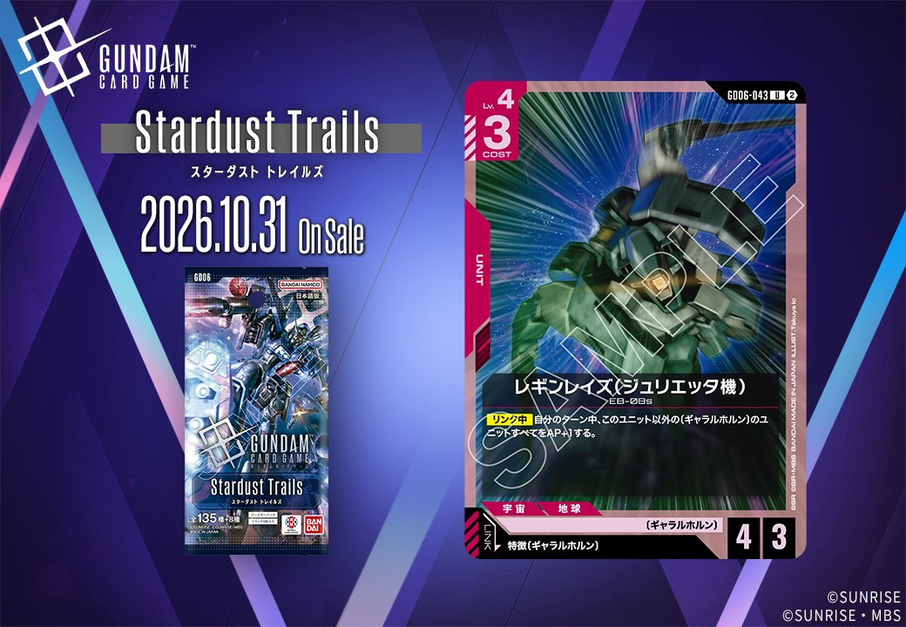
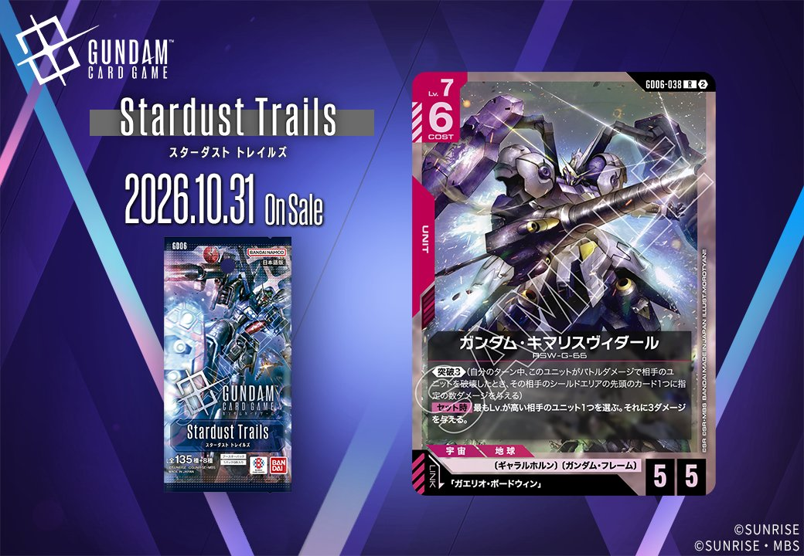

今回は GD06 に収録される赤のUNIT2枚、「レギンレイズ(ジュリエッタ機)」(GD06-043)と「ガンダム・キマリスヴィダール」(GD06-038)を取り上げます。2枚ともリンク条件を持つUNITですが、一方のレギンレイズ(ジュリエッタ機)は特徴にギャラルホルンを持つPILOTという範囲での指定、もう一方のガンダム・キマリスヴィダールは「ガエリオ・ボードウィン」という個別のPILOT指定となっており、条件の広さに違いがあります。

レギンレイズ(ジュリエッタ機) (GD06-043)
| 色 | 赤 | タイプ | UNIT |
| Lv | 4 | コスト | 3 |
| AP | 4 | HP | 3 |
| 特徴 | 宇宙、地球 | ||
| リンク条件 | 特徴にギャラルホルンを持つPILOT | ||
効果: 【リンク中】自分のターン中、このユニット以外の〔ギャラルホルン〕のユニットすべてをAP+1する。
コスト3でAP4／HP3と、攻撃側に寄った数値配分のユニットです。特徴に〔ギャラルホルン〕を持つパイロットとのリンクが条件となり、成立すると【リンク中】に自分のターン中のみ、自身を除く〔ギャラルホルン〕のユニットすべてをAP+1します。自身が対象外である以上、単騎では恩恵がなく、盤面に同特徴のユニットを並べてこそ価値が出る設計といえます。注意したいのは耐久面で、HP3は格闘戦やダークネスフィンガーの2ダメージには耐えるものの、戦技の向上のLv.4以下へ3ダメージという条件に噛み合ってしまう点です。展開を維持できるかが運用の鍵になります。


ガンダム・キマリスヴィダール (GD06-038)
| 色 | 赤 | タイプ | UNIT |
| Lv | 7 | コスト | 6 |
| AP | 5 | HP | 5 |
| 特徴 | 〔ギャラルホルン〕、〔ガンダム・フレーム〕 | ||
| リンク条件 | 「ガエリオ・ボードウィン」 | ||
効果: 《突破3》(自分のターン中、このユニットがバトルダメージで相手のユニットを破壊したとき、その相手のシールドエリアの先頭のカード1つに指定の数ダメージを与える)【セット時】最もLv.が高い相手のユニット1つを選ぶ。それに3ダメージを与える。
コスト6でAP5/HP5、さらに《突破3》を持つLv.7のユニットです。バトルダメージで相手ユニットを破壊できれば相手シールドエリアの先頭に3ダメージが入るため、盤面処理とシールド削りを同時に狙えます。【セット時】は最もLv.が高い相手のユニット1つに3ダメージという、対象を選べない代わりに大型を狙い撃つ形の効果で、パイロットを搭載したタイミングで発動する点に注意が必要です。リンク先は「ガエリオ・ボードウィン」で、リンク運用を前提に構築すると扱いやすくなります。Lv.の低い相手ユニットには届かないため、Lv.4以下に3ダメージを与える戦技の向上や、2ダメージの格闘戦と役割を分担させる構成が現実的です。

関連カード
-
 格闘戦(ST03-013)赤系デッキ内採用率18% (1248デッキ)
格闘戦(ST03-013)赤系デッキ内採用率18% (1248デッキ) -
 資源衛星パラオ(GD01-128)赤系デッキ内採用率17.6% (1218デッキ)
資源衛星パラオ(GD01-128)赤系デッキ内採用率17.6% (1218デッキ) -
 機体奪取(GD05-111)赤系デッキ内採用率12.6% (874デッキ)
機体奪取(GD05-111)赤系デッキ内採用率12.6% (874デッキ) -
 ダークネスフィンガー(GD05-110)赤系デッキ内採用率12.2% (843デッキ)
ダークネスフィンガー(GD05-110)赤系デッキ内採用率12.2% (843デッキ) -
 戦技の向上(GD03-109)赤系デッキ内採用率11.9% (828デッキ)
戦技の向上(GD03-109)赤系デッキ内採用率11.9% (828デッキ) -
 ヴィダール(GD06-090)NEW赤系 — リンク対象（ギャラルホルン PILOT）（新カード）
ヴィダール(GD06-090)NEW赤系 — リンク対象（ギャラルホルン PILOT）（新カード） -
 ガエリオ・ボードウィン(GD02-099)白系デッキ内採用率0% (0デッキ)
ガエリオ・ボードウィン(GD02-099)白系デッキ内採用率0% (0デッキ) -
仇討ちの決意(GD02-118)白系デッキ内採用率0% (0デッキ)
-
面壁九年・堅牢堅固(GD02-119)白系デッキ内採用率0% (0デッキ)
-
マクギリス・ファリド(ST05-012)白系デッキ内採用率0% (0デッキ)